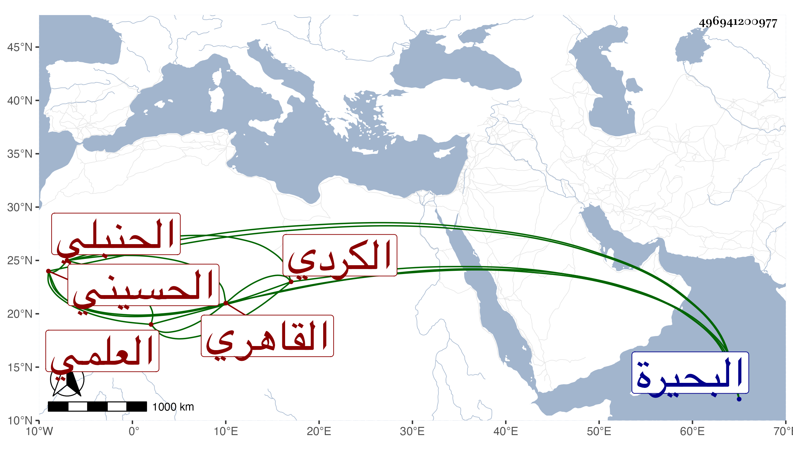

0902Sakhawi.DawLamic.ITO20230111-ara1.EIS1600.496941200977
Biography ID: 496941200977
220
محمد بن عبد الله بن محمد بن خليل بن بكتوت بن بيرم بن بكتوت الشمس الكردي الأصل العلمي القاهري الحسيني الحنبلي سبط الشمس الغزولي الحنبلي نزيل البيبرسية الماضي ويعرف بابن بيرم ، قدم بعض سلفه مع السلطان صلاح الدين بل كان بيرم ممن عمل ملك الأمراء بالبحيرة وأما أبوه عبد الله فحفظ القرآن وشيئا من القدوري ولكن عمل ابنه هذا حنبليا لجده . ومولده في حادي عشر شعبان سنة اثنتين وأربعين وثمانمائة ونشأ فحفظ القرآن والمحرر فيما قال وقرأ فيه على ابن الرزاز ثم على العز الكناني وناب عنه ، وكتب الخط الحسن ونسخ به أشياء كتفسير ابن كثير وسمع الحديث علي وعلى جماعة بقراءتي ، وصحب ابن الشيخ يوسف الصفي بل تردد للمتبولي وغيره من الصالحين ، ولازم الاجتماع بي ولا بأس به عقلا ودربة وتعففا بل هو خير نواب الحنابلة الآن وإن كان فيهم من هو أفضل وقد حج موسميا سنة ست وتسعين ونعم الرجل .
